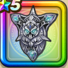

死神の盾
攻略班 7.0点 / 背水のかまえビッグシールドドルマ属性耐性+5%破壊神シドーへのダメージ+10%スキルの斬撃ダメージ+2%ジバリア属性ダメージ+3%ドルマ属性ダメージ+3%【呪い】自分が受けるスキルのHP回復効果-5%
くわしい特徴
【レベル別習得スキル】 Lv1背水のかまえ（消費MP：7）1ターンの間ダメージを受けるたびに斬撃ダメージで反撃する状態になる Lv5破壊神シドーへのダメージ+10% Lv8【呪い】自分が受けるスキルのHP回復効果-5% Lv10ビッグシールド（消費MP：7）使用時含む5ターンの間、物理攻撃へのガード率を1段階上げる。最大2段階まで上がり、1段階で25％、2段階で50％ガード率が上昇する。 Lv12スキルの斬撃ダメージ+2% Lv15ジバリア属性ダメージ+3% Lv18ドルマ属性ダメージ+3% Lv20ドルマ属性耐性+5% Lv23さいだいMP+10 Lv25ガード率+1% 【限界突破スキル】 1凸攻撃力+8 2凸ガード率+1% 3凸守備力+5 4凸ガード率+2%